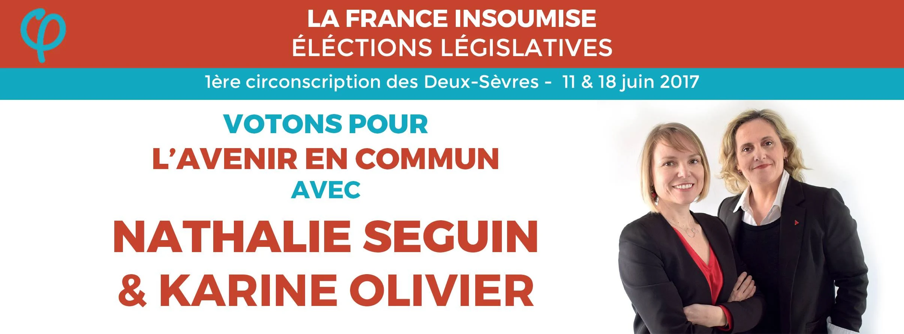
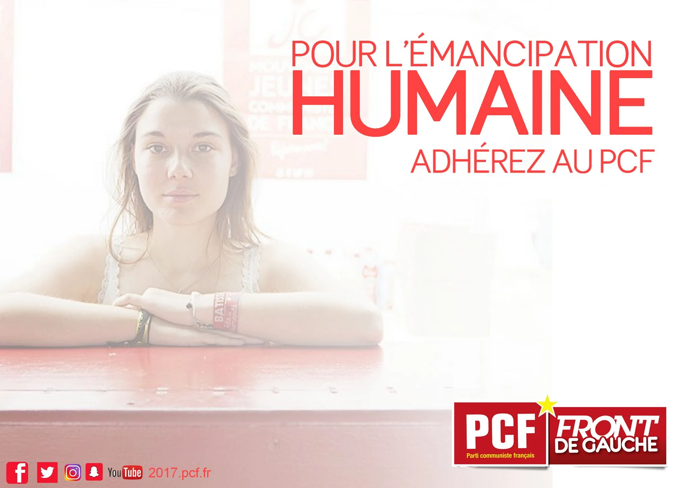
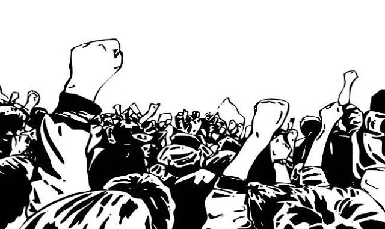
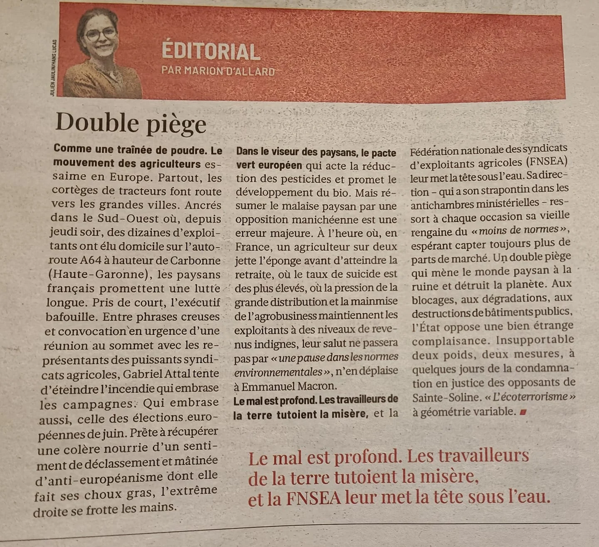
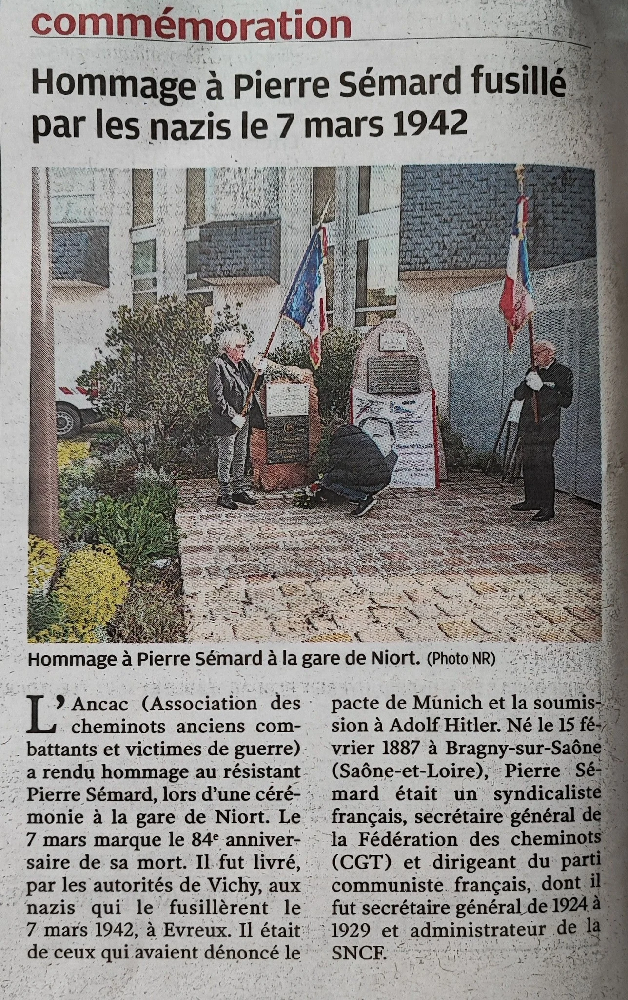
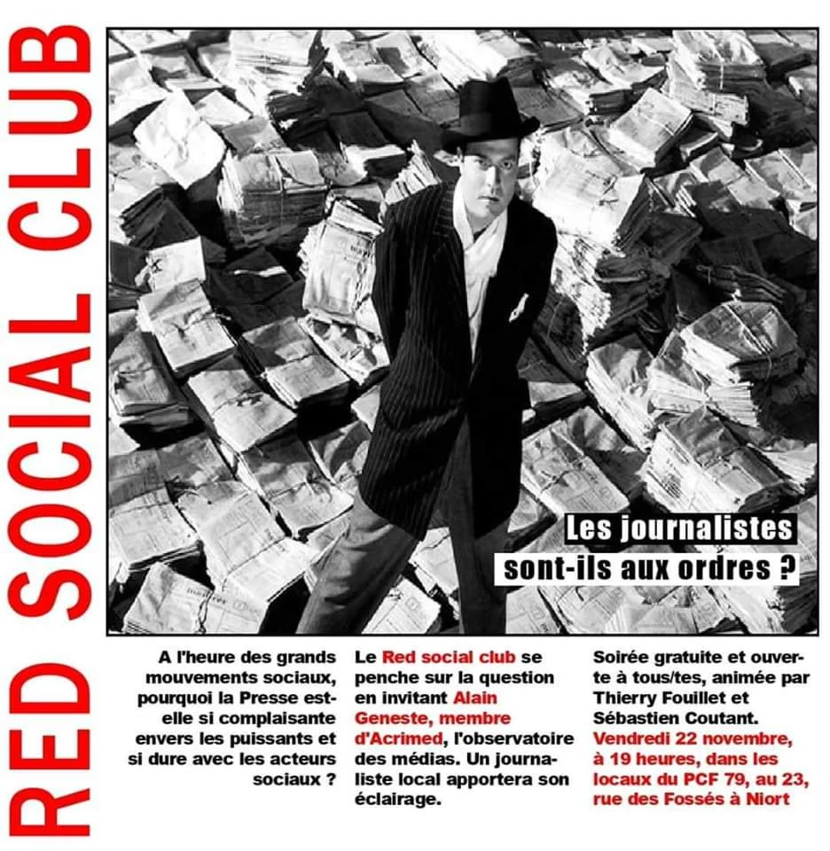
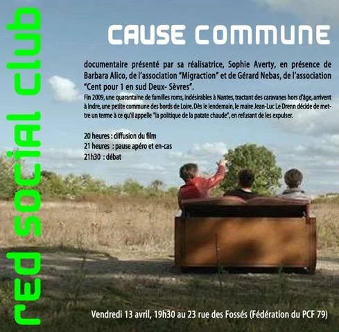
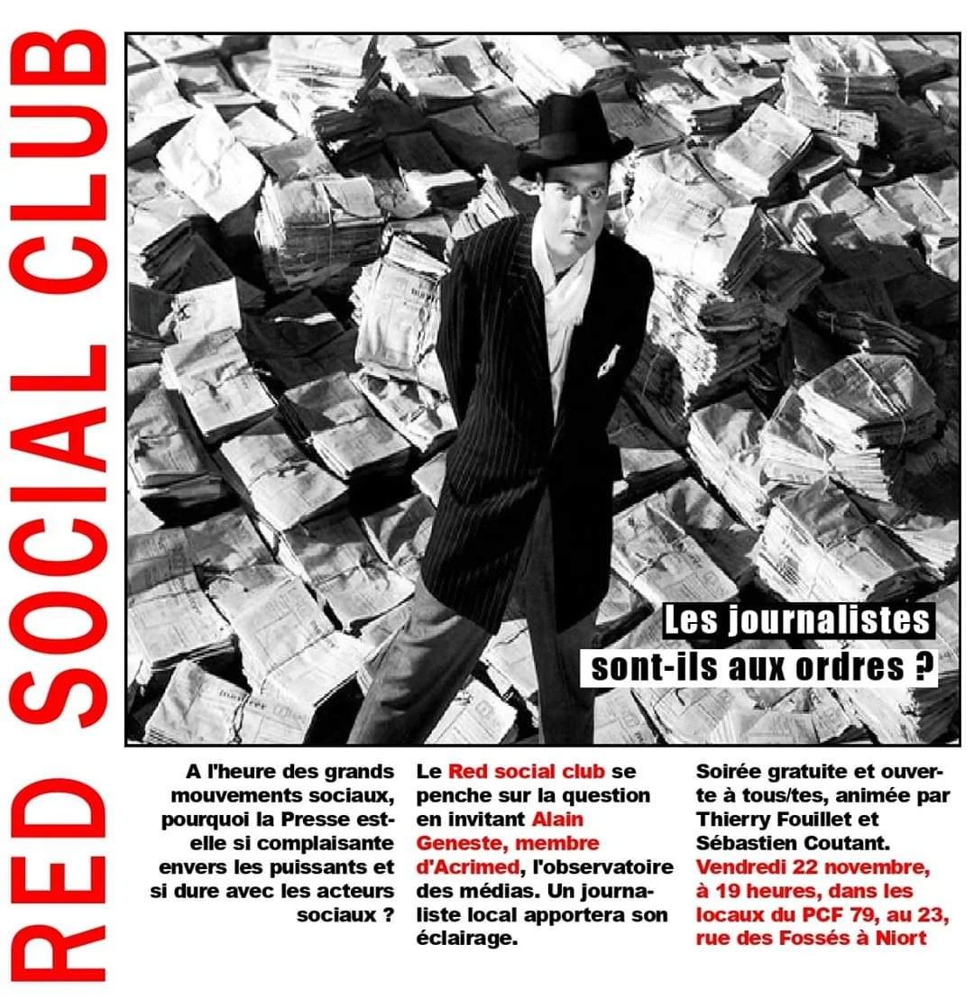
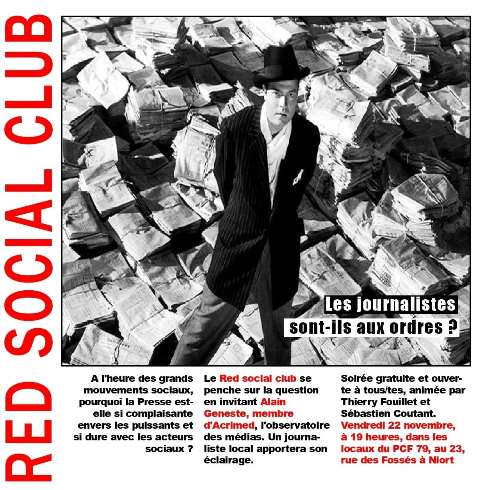

Albums et vidéos Facebook
Ces fichiers viennent des albums ou de l’index vidéo de l’export historique. Les titres d’album et les dates proviennent de Facebook.
Photos de couverture









Photos de profil


Photos sans catégorie













